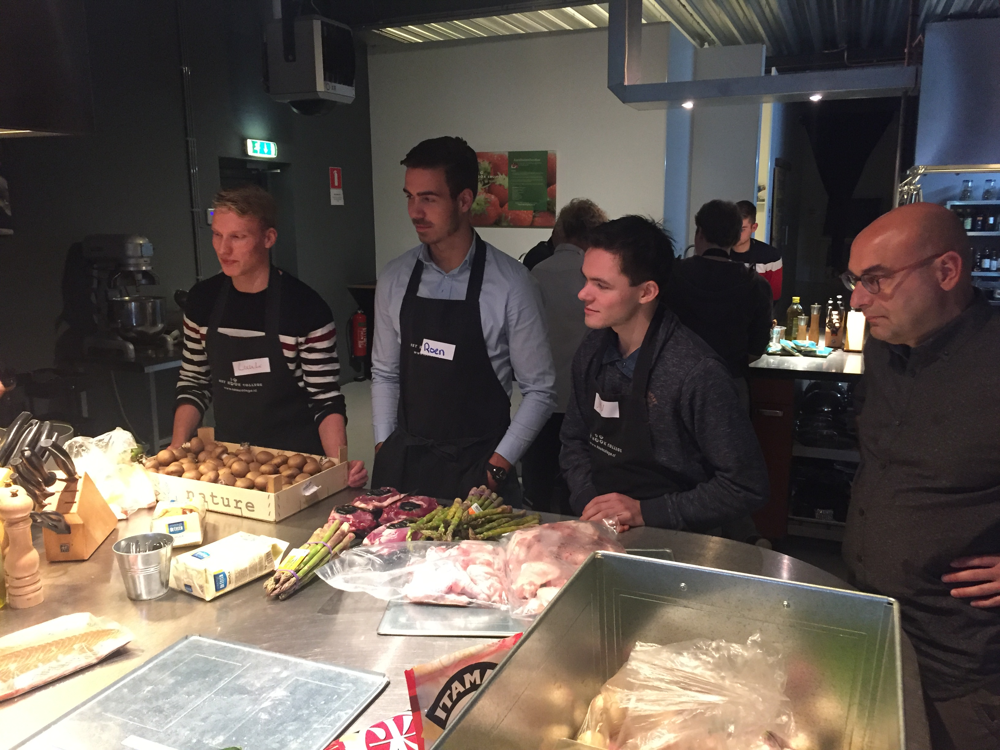
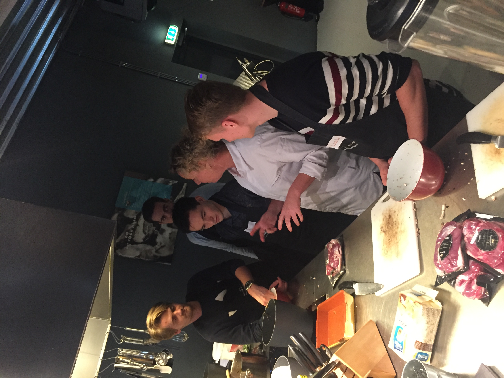
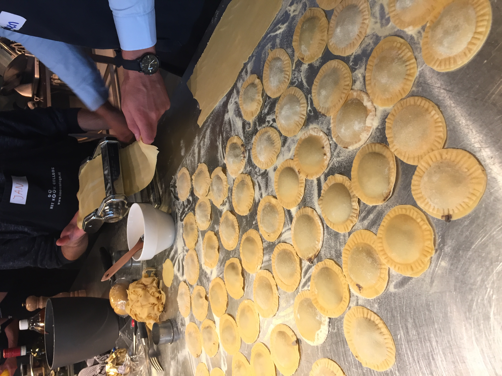
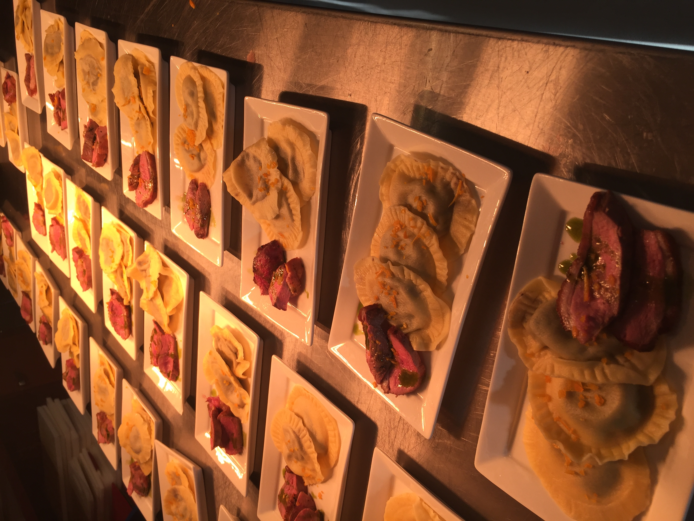
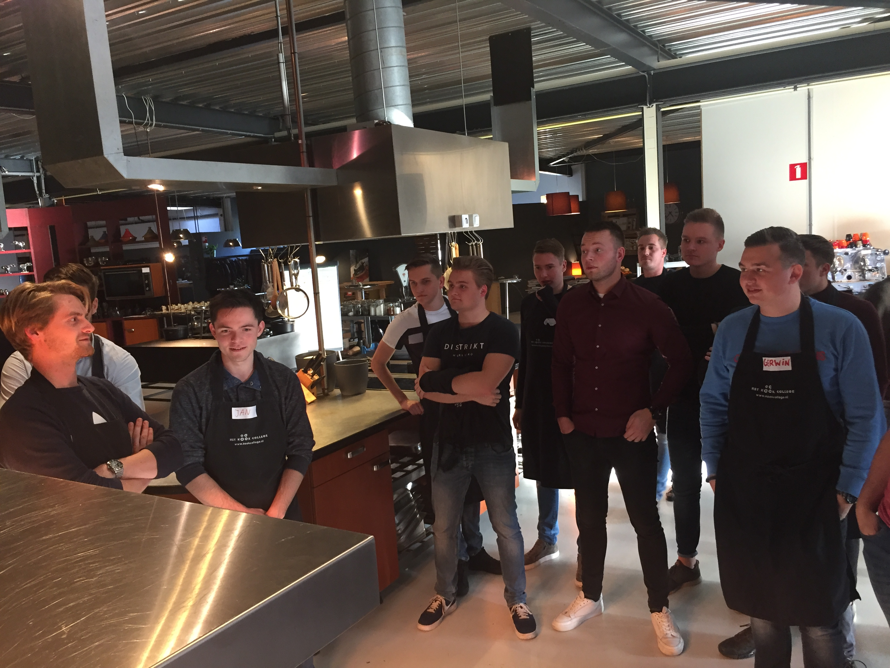
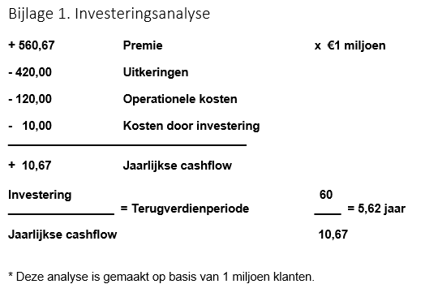

ontwerpen: ontwerpt bedrijfsprocessen volgens Smart Industry criteria
ontwerpen: beschrijft de implicaties voor het gehele business model en voor de positie van de organisatie in de keten
Doordat ik van een technische opleiding kom, had ik nog nooit van een business model case gehoord.
Door goed op te letten hoe mede studenten die een technische bedrijfskunde opleiding volgen begrijp ik nu hoe een BMC werkt en waar het voor dient.
Tijdens de workshops zijn er 2 momenten geweest waarbij samen met een gastspreker een BMC gemaakt werd.
Door Samen te werken met meerdere technische bedrijfskundigen hebben we een duidelijk en legitiem BMC opgezet.
Een voorbeeld is het project van week 2 voor het bedrijf AXA waarbij Geert Rensen geholpen heeft met de opzet hiervan.
Tijdens de laatste workshop met Paul Kalis is een huidige en nieuwe situatie in een BMC geplaatst en zijn de consequenties van een verandering besproken.
Algemeen
Tijdens deze lessen had ik veel moeite om op te letten waar het over ging, maar voornamelijk de opdrachten waren zeer uitdagend voor mij.
Om bepaalde opdrachten begrijp baar te krijgen, heeft de student Luuk Wenting mij goed begeleid tijdens het maken van deze opdrachten.
Ik ben hem hiervoor zeer dankbaar, omdat het hierdoor gemakkelijker verliep en de lessen beter begrijp.
overig
Onderzoeken: vertaalt een praktijkcasus naar een onderzoeksplan, voert deze uit en evalueert de kwaliteit van uitvoering
Communiceren: communiceert op effectieve wijze zijn bevindingen naar verschillende doelgroepen
Om de kennis van PCB (Printplaten) te verbreden zijn we naar NXP in nijmegen geweest. Dat grote gebouw bij dukenburg naast het spoor met als naam: ICN8-fab. Hier hebben we geleerd hoe een printplaat gemaakt wordt en hoeveel werk er in het maken van een microprocessor zit.
Na de uitleg van NXP hebben we een intervisie gehad voor het project bij de bedrijven. De structuur van het bedrijf waar het project ontworpen wordt stond hierbij vooraan.

Voor het verbeteren van de samenwerking, zijn we als groep naar een kookcollege geweest in wijchen. Hier hebben we in luxe leren koken en hebben we veel geleerd over hoe gemakkelijk samenwerken is.





Voor het verbeteren van de samenwerking, zijn we als groep naar een kookcollege geweest in wijchen. Hier hebben we in luxe leren koken en hebben we veel geleerd over hoe gemakkelijk samenwerken is.

Tijdens de les van deze week zijn we bezig geweest met het zoeken naar "Hoe verander je naar Smart culture?"
Hieronder staat de link naar de infographic die we tijdens deze les gepresenteerd hebben.
Infographic Smart culture
De 5 parameters van lean:
Tijdens het onderwerp smart business is het onderdeel Lean te spraken gekomen. Om dit beter te begrijpen en waarom bedrijven hier meer mee gaan werken, heb ik onderzoek gedaan naar Lean. Om een bedrijf beter op zichzelf te laten functioneren, zijn er verschillende methodes bedacht om dit te bereiken. Voor het verbreden van de kennis in Lean is een bedrijf gevraagd hoe ze Lean toepassen in hun bedrijf. In dit verslag wordt gefocust op het onderwerp Lean, de 5 parameters hiervan en hoe het bedrijf “Elk” dit toepast.
Flow
Deze stap wordt ook “identify value” genoemd. Hier wordt gekeken naar de producten of service van het bedrijf vanuit de ogen van een klant gekeken met de vraag hoe het bedrijf het kan verbeteren. Dit helpt om dat te vinden wat het bedrijf speciaal maakt.
“Elk” heeft sinds het begin gefocust op het schilderen, maar kwam al snel achter dat dit niet goed genoeg is. Ze zijn gaan kijken wat ze kunnen verbeteren en ondervonden dat de mensen geen motivatie hadden om te werken en dat alleen schilderen niet genoeg was om de crisis te doorstaan.
Customer
Als je concreet ondervonden hebt wat een bedrijf wilt en doet kun onderzocht worden, hoe daar te komen. Met behulp van “value stream mapping” hiermee kan een team/bedrijf begrijpen hoe een project door het bedrijf loopt en nog belangrijker, waar het vast loopt. Het product van deze stap is een duidelijke map van de organisatie waar elke stap van het proces staat en hoe het verloopt.
“Elk” heeft ondervonden dat uiteindelijk maar 7% van alle informatie die de klant geeft op het ontwerp terecht komt. Dit is zeer weinig, waardoor het project veel meer/minder werk te verduren heeft en dus duurder voor het bedrijf wordt.
Process
Met de map die bij de vorige stap gemaakt is, kan gekeken worden naar hoe het proces geoptimaliseerd kan worden. Een Lean team kan de flow van alles verbeteren, dus niet alleen het producerende gedeelte, maar ook bijvoorbeeld de klant communicatie. Bekijk waar inefficiëntie, wrijving en vast lopers zitten in het huidige proces.
“Elk” heeft is volgorde van het project achterna gegaan en zijn tot de ontdekking gekomen dat de projecten “over de muur gegooid worden”. Tussen de verschillende afdelingen is dus geen of weinig communicatie waardoor de informatie verloren gaat.
Supplier
Deze stap wordt “establish pull” genoemd. Hier wordt gekeken naar wanneer de klant het product werkelijk wilt. Het idee hierachter is om de klant de mogelijkheid te geven om aan de waarde te trekken zoals hij wilt. In plaats van veel op voorraad te hebben voor een order, moet er gekeken worden naar wat een klant direct nodig zou hebben en wat op bestelling verstuurd kan worden.
“Elk” wilde van hun voorraad af, want producten die staan leveren geen geld op en kost ruimte. Ze hebben gekeken wat direct nodig kan zijn en dit zo min mogelijk gemaakt en de producten wat direct besteld kan worden staat niks meer van in het magazijn. Hierdoor heeft het bedrijf minder opslagruimte nodig en worden de onderdelen direct vanuit de leverancier geleverd bij de projecten.
Workforce
De laatste stap voor het lean proces is eigenlijk een “continuous improvement. Hier wordt gezocht naar wat de meest efficiënte procedure is en deze wordt steeds uitgebreid en veranderd. De waarde wordt steeds verhoogd in termen van minder kosten, tijd, producten gebruik, opslag, enz.
“Elk” blijft bezig met onderzoeken naar hoe hun werk proces verbeterd kan worden en ze staan open voor nieuwe ideeën hoe hun efficiëntie omhoog gebracht kan worden.
Feedback excursie
De gehele excursie was leerzaam en niet alleen voor het Lean proces, maar ook hoe je een bedrijf kunt verbeteren inclusief de werkwijze van werknemers. De presentatie van elk was uiterst interessant en het heeft nieuwe ideeën geopend bij mij die ik later en nu kan gaan gebruiken.
De Scrum presentatie was niet heel aantrekkelijk of interessant waardoor ik mijn aandacht snel verloor. De opdrachten en het gebruik van scrum tijdens de opdrachten was een zeer goede toevoeging tot het binden van de groep en ook zeer leerzaam. De scrum uitleg is dus een goede toevoeging!
Ik vond de gehele dag een goede toevoeging voor de minor.
Bibliografie
5 principles of lean. (sd). Opgehaald van leankit: https://leankit.com/learn/lean/5-principles-of-lean/
elk. (sd). Opgehaald van elk: https://www.elk.nl/
Elsevier. (sd). Production Economics. Opgehaald van https://drive.google.com/file/d/1I10eBrCel6gGM4KwY_t3q_Li9nYmnBAP/view


This work is licensed under a
Creative Commons Attribution 4.0 International License
.
Veranderingen voor organisatie
Wanneer er wordt gekozen voor de business case zoals uitgewerkt in het voorgaande stuk zal er niet alleen in het verdienmodel verandering plaats vinden. De organisatie rondom de autoverzekeringen zal namelijk net zo drastisch moeten gaan veranderen als het verdienmodel zelf. Door de mogelijkheden die de case biedt zullen mensen andere taken uit gaan voeren, anders samen gaan werken en moet er anders worden gecommuniceerd met de klant. Deze veranderingen zullen in dit deel verder worden toegelicht.
Organisatie
Wanneer AXE ervoor kiest om volgens het nieuwe verdienmodel verder te gaan zullen er meer dan alleen het verdienmodel moeten veranderen. AXE moet erachter zien te komen wat de behoeften en wensen zijn van haar klanten en zal dus dicht bij de klant en haar gebruikservaring moeten komen te staan. Door een iteratief ontwerpproces op te zetten kan de app worden doorontwikkeld op basis van de wensen van de klant. Deze werkwijze is totaal verschillend van de huidige situatie waarin een medewerker van AXE niet of nauwelijks contact heeft met een consument.
Ten eerste zal de organisatie van het bedrijf een drastische verandering doormaken. De focus van het werk zal wegtrekken van het nemen van steekproeven tegen fraude, uitkeren van schadeclaims en beleggen van financiële middelen. Deze activiteiten zullen, in de ideale situatie, zo veel mogelijk worden geautomatiseerd waardoor medewerkers op een nieuwe manier kunnen worden ingezet.
De focus van de kernactiviteiten in het nieuwe verdienmodel zal komen te liggen op het tegen gaan en voorkomen van schade. Door dichter bij de klant te gaan staan en haar proberen te begrijpen kunnen er nieuwe methoden worden ontwikkeld waardoor schade kan worden vermeden. Dit zullen de nieuwe taken zijn waar AXE zich in de nieuwe situatie mee bezig zal moeten houden.
Het introduceren van een nieuw verdienmodel heeft nauwelijks kans van slagen wanneer het personeel van de organisatie niet in staat wordt gesteld mee te veranderen. Vaak komen veranderingen gepaard met onzekerheid voor de werknemers wat al gauw weerstand bij hen kan oproepen. Om de verandering tot een succes te leiden zal AXE zich goed moeten bedenken hoe het nieuwe verdienmodel bij zowel de klant als het bedrijf zelf tot een succes kan worden geleid.
Cultuur
De medewerkers in de oude situatie zijn gewend om hun taken uit te voeren zonder hierbij veel contact te hebben met collega’s van andere afdelingen. In de nieuwe situatie is het van belang dat er vanuit verschillende afdelingen op nieuwe wijzen wordt samengewerkt. Dit vraagt om een cultuurverandering waarin het begrijpen van de klant, kennisdeling en het ontwikkelen van nieuwe ideeën centraal komt te staan.
Het begrijpen van de klant wordt in de nieuwe situatie een taak die voor de gehele organisatie moet worden uitgetrokken. Alleen wanneer iedereen weet wat er wordt verwacht van de organisatie en haar producten / services kan er op een effectieve manier worden samengewerkt. Doordat medewerkers met verschillende standpunten naar de situatie kijken en deze met elkaar bespreken en deze standpunten te checken met de consument kan de klant worden begrepen. Bij nieuwe bevindingen is het cruciaal dat deze worden gedeeld en besproken om tot nieuwe ideeën te komen om uiteindelijk waarde te kunnen creëren voor de klant.
Business Case: SMART autoverzekering o.b.v. rijgedrag
1. aanleiding
AXA insurance
AXA insurance is een verzekeringsmaatschappij uit Frankrijk die wereldwijd werkzaam is, en tot de grootste in de branche behoort. Ze richten zich op levens, ziekte en schadeverzekeringen en daarnaast op financiële diensten zoals beleggingen.
Probleem
Deze Business Case is gericht op AXA insurance in Turkije met in speciaal de auto schadeverzekeringen. Op dit moment is het verzekeren van auto’s in Turkije geen winstmakende business voor AXA en maakt zelfs verliezen. Dit komt doordat enerzijds er veel schade gereden wordt en er dus veel claims uitgegeven moeten worden, anderzijds zijn er vele concurrenten, veelal families die hun eigen bank beginnen, in Turkije waardoor de premie voldoende concurrerend moet zijn. Daarnaast vindt er in Turkije veel fraude plaats met betrekking tot het innen van claims.
Doelstelling
Het doel van AXA is om schadeclaims te voorkomen en het aantal schadeclaims te minimaliseren, niet-risicovolle klanten aan te trekken en risicovolle klanten of een hoge premie laten betalen of hen als klant te verliezen. Of te wel, minder schadeclaims en een concurrerende premie om zo meer (niet-risicovolle) klanten aan te trekken, in de verwachting dat de winst zal groeien.
Overwogen ideeën
In de vorm van brainstorm met verschillende groepen en deskundigen zijn er verschillende ideeën geschept.
Gebruiksvriendelijkheid verhogen:
o Schadeclaims indienen via een applicatie;
o Chatbots en veel gestelde vragen via een applicatie;
o Sensoren inbouwen in de auto van de bestuurder om schade te herkennen.
Rijstijl van bestuurders meten met behulp van sensoren, om inzichtelijk te krijgen wie een risico rijder is, en wie niet. Zodat op deze data acties ondernomen kunnen worden, zoals:
o Belonen van goed gedrag met kortingen, en afdwingen van slecht gedrag door middel van premieverhogingen.
Er is gekozen vanuit verschillende partijen voor het meten van de rijstijl van bestuurders.
2. Kosten-baten analyse
Investeringsproject
Het project is gericht op het meten van de rijstijl van de verzekerde. Het meten gebeurd met het gebruik van sensoren, in de vorm van een kastje, die mate van optrekken, remmen en andere bewegingen meet en registreert tijdens het rijden. De data die opgehaald wordt, wordt vervolgens geanalyseerd bij de verzekeraar. Die kan op basis van deze data een uitspraak doen op welke bestuurder in welke risicocategorie hoort. De risicocategorie waarin de bestuurder zich bevindt bepaald de hoogte van de te betalen premie.
Toegevoegde waarde
Het bepalen van de hoogte van premie op basis van rijgedrag en het belonen van veilig rijgedrag stimuleert, naar verwachting, de verzekerde om veiliger te rijden. In tegenstelling, wordt onveilig rijgedrag bestraft met een hogere premie. Dit zorgt er voor dat of de verzekerde en hoge premie betaald en er break-even wordt gespeeld of dat de verzekerde overstapt naar een andere verzekeraar.
Hierdoor daalt het risico dat AXA draagt als maatschappij. Dit geeft ruimte aan AXA om ten eerste winst te maken en ten tweede te concurreren met premie prijzen
Kosten en baten
Om het project te realiseren moeten er investeringen gedaan worden. AXA begint dit project met 1 miljoen klanten (van de 3 miljoen). Hiervoor zullen meetkastjes voor in de auto moeten worden aangeschaft.
Deze meetkastjes kosten €60 per stuk. Dit zal voor de eerste batch klanten een uitgaven worden van €60 miljoen.
Het eerste jaar van de investering ontvangt de klant een korting van 10% op zijn premie. Na het eerste jaar zal de veilige klant deze premie blijven betalen en zal de onveilig rijdende klant kostendekkende premie moeten gaan betalen. De verwachte premie zonder investering is €580. De verwachte premie met investering is: €193,33 x 90% + €386,67 = €560,67.
Er wordt een schadelast van 20% lager verwacht. €450 miljoen is de verwachte schadelast zonder investering. De verwachte schadelast met investering is: €120 miljoen x 80% + €300 miljoen = €420
Hiernaast worden er €120 miljoen aan operationele kosten verwacht en 10 miljoen aan jaarlijkse kosten met betrekking tot de investering. Hierbij spreken we o.a. over het ontvangen, analyseren en verwerken van data.
Bovenstaande posten zijn in de investeringsanalyse (bijlage 1) weergegeven.
Risico’s
Klant risico’s
Door deze verandering wordt het voor een voorzichtig rijdende klant voordeliger, maar voor een roekeloze bestuurder wordt de premie zo hoog dat het niet in zijn voordeel is om nog bij de verzekeraar te blijven.
Door gebruik van een kastje in de auto kan het zijn dat de klant zich geschonden voelt in zijn privacy. Met de nieuwe AVG wet kan dit problemen geven, dus moet AXA een duidelijk contract opstellen.
Bedrijfsrisico
De risico voor het bedrijf is dat deze veel moet investeren in de apparatuur voor de auto’s. Indien deze kosten niet dekkent zijn door de premie, is het niet winstgevend of duurt het te lang voor er resultaten ontstaan.
een ander risico voor het bedrijf is dat de klant leert hoe de meetwaarden gefraudeerd kunnen worden. Hierdoor kan de klant als goede bestuurder zijn premie betalen zonder op zijn rijstijl te letten.
Indien het land besluit om zijn wetgeving omtrent autoverzekeringen te veranderen, kan het gebeuren dat dit ten nadele gaat van dit project. Hier kan AXA weinig aan veranderen en moet er zo spoedig mogelijk een oplossing hiervoor gevonden worden.
3. Investeringsbeslissing
In bijlage 1 is de terugverdienperiode van de betreffende investering berekent. De terugverdienperiode op basis van bovenstaande bedragen afgerond 6 jaar.
De voordelen van de investering zijn:
- Beter rijgedrag stimuleren en dus minder risico lopen;
- Break-even spelen bij risicogevallen, of hen verliezen;
- Minder schade geeft meer ruimte te concurreren.
De risico’s bij de investering zijn:
- …
Er wordt verzocht de investering op deze manier te doen en hier rekening mee te houden…

Business case

Hieronder staan een aantal foto's van die dag.


Verzekeraars krijgen hun inkomsten door middel van premiebetalingen. Het is voor de verzekeraar dus belangrijk dat de klant geen schade maakt, zodat er meer verdient kan worden.
Het is dus in het voordeel van de verzekeraar als er data verzameld gaat worden om de ongevallen te voorkomen. Tegenwoordig is bijna overal een apparaat wat verbinding heeft met de Cloud met genoeg sensoren om de data te verzamelen en te versturen.
Deze verzamelde data kan ook gebruikt worden om tips te versturen naar de klant zodat deze zijn leef wijze kan verbeteren en dus veiliger omgaat. Zo kan ook op de belangrijke bezittingen van een klant een sensor geplaatst worden, zodat deze gevold kan worden in geval van diefstal. Hiernaast kan de data ook gebruikt worden om andere verzekeringen en adviezen te versturen om zo de business te verbreden.
De verzamelde data heeft ook een keerzijde voor de klant tijdens bijvoorbeeld het auto rijden. Door de hoeveelheid verzamelde data, kunnen er ook boetes uitgeschreven worden bij het overschreden van de maximale toegestane snelheid op wegen.
Bibliografie
digital ecosystems for insurers. (2019, 9 12). Opgehaald van mckinsey: https://www.mckinsey.com/industries/financial-services/our-insights/digital-ecosystems-for-insurers-opportunities-through-the-internet-of-things
kansen en bedreigingen voor verzekeraars. (2019, 9 12). Opgehaald van frankwatching: https://www.frankwatching.com/archive/2018/11/28/internet-of-things-kansen-en-bedreigingen-voor-verzekeraars/